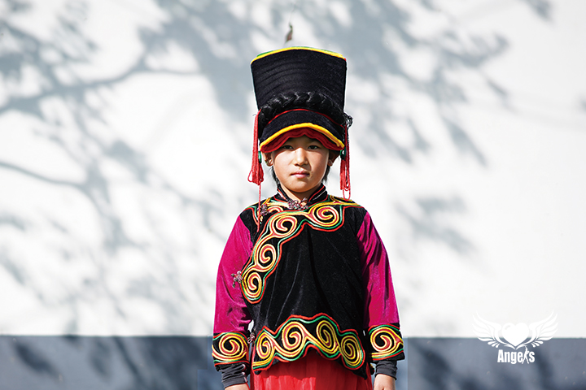
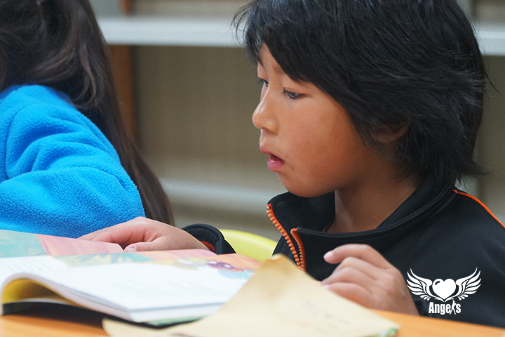
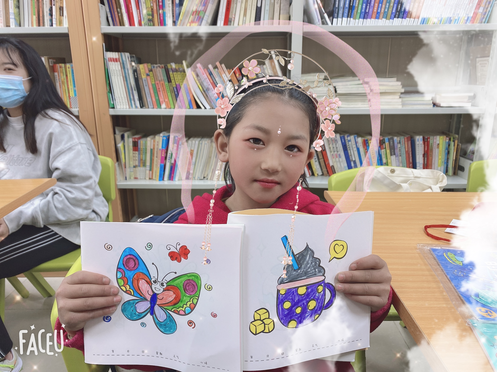
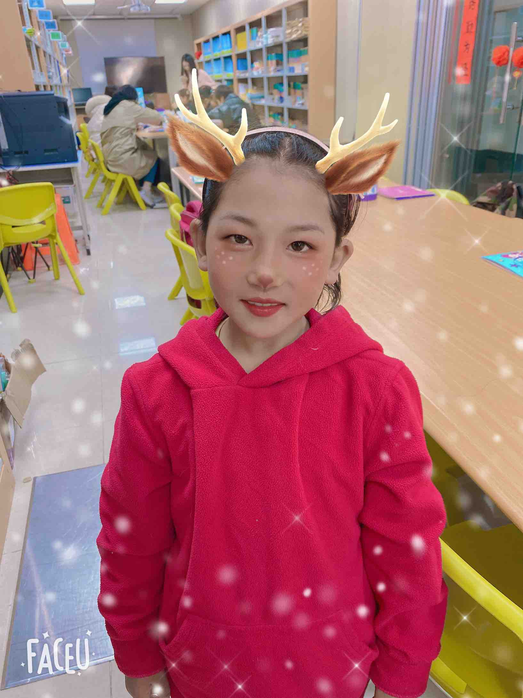
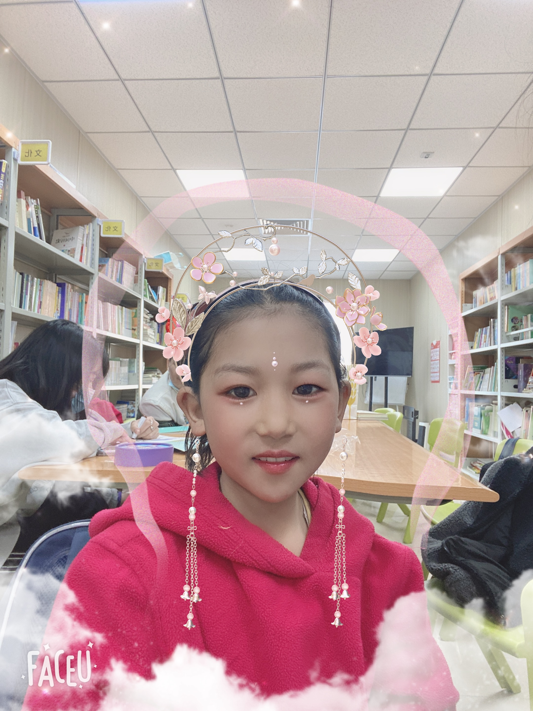
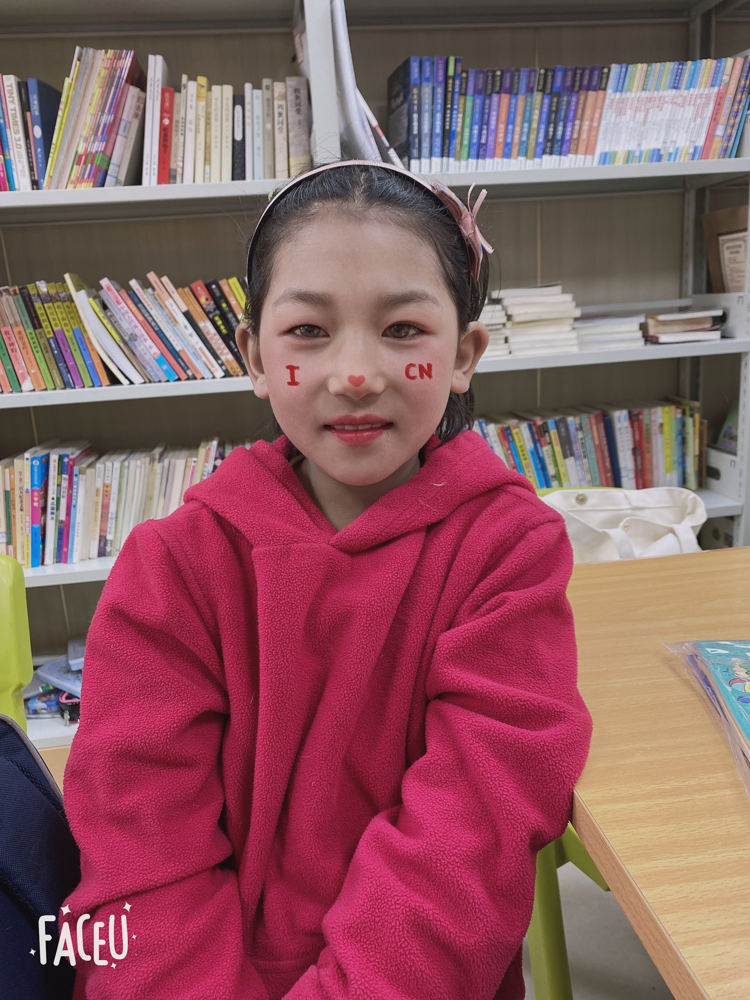
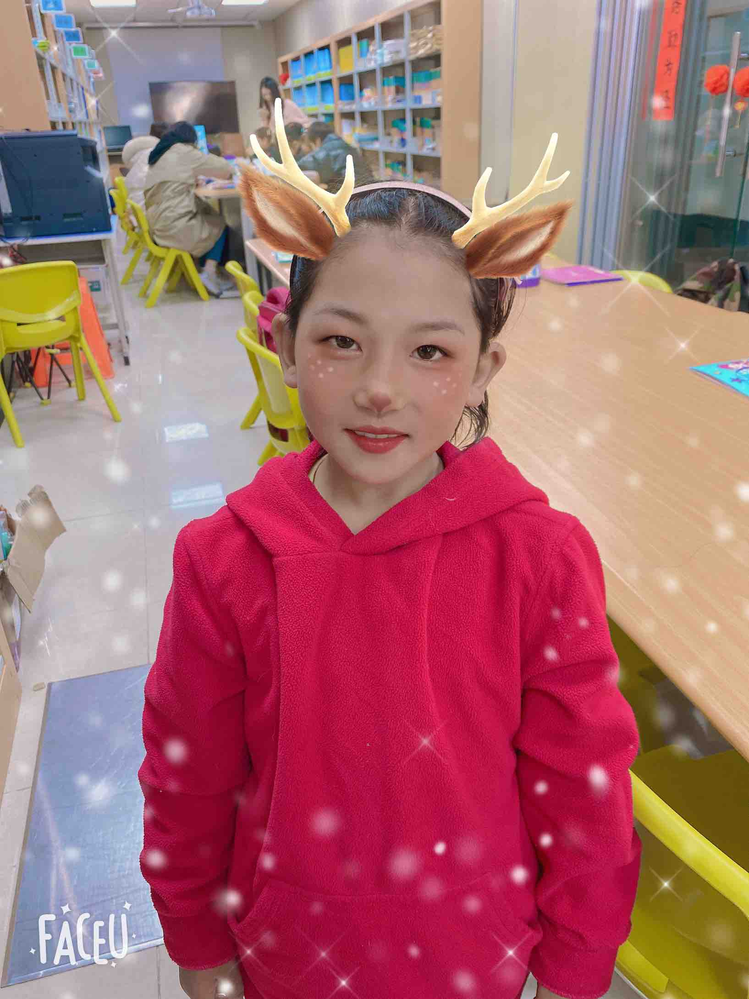
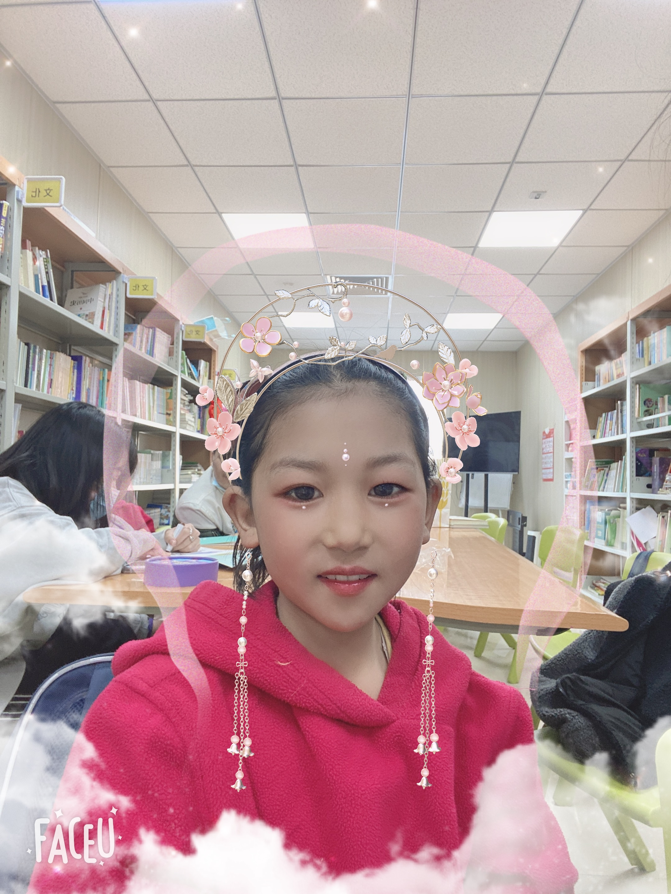
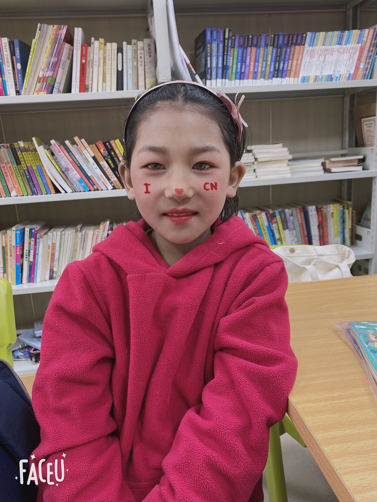

刷日阿牛的故事
hi~姐姐你好，很高兴认识你 我是刷日阿牛，出生于2009.11.15，我是2019年12月加入强棒基地的，我的老家在四川凉山州，我是可爱的小淘气，萌娃小队员，是所有队员爱护的小妹妹，小小身板实力非凡，可以啃的了小苹果，扛的动110斤的大老师。



 







其他同学记录的信息内容
刷日阿牛是一个特别热情开朗的小姑娘，一到基地就阿牛就拉着我的手带我去座位上画画，她告诉我她最喜欢的事就是画画，以后想当一个画家。 六岁的阿牛有很多事情超乎我的想象，她能背起一百多斤的成年人，她告诉我在大凉山的时候她们都要上山背比人还要重的柴火，爬很高的山。小小年纪的她还认识很多字，我送给她的贺卡上的字她都认得，连贺卡上印着的不常用的“廿”字都认识。那张贺卡的背面是一张黄昏的山坡的图片，她看到那张图片说这张图上的是大凉山，跟她家乡的山一模一样。我不知道贺卡上的山是不是大凉山，但我知道她真的很想家，想家人，她说只有家里有事，家人来基地领孩子才能回家，但她妈妈不知道北京在哪里。 阿牛静若处子动若脱兔，户外活动的时候领着我参加各种游戏，丢沙包跳绳跳皮筋，上蹿下跳好像永远不会累，很有活力。阿牛很讲礼貌，嘴边不离“谢谢”“您”，画画、拼积木和玩游戏的时候都不争不抢。 画画时我听见她小声嘀咕着想要一支圆珠笔，如果下次还有机会见到她，我一定要给她一支圆珠笔。